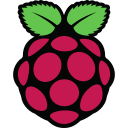

Selected backend, API, AI integration and IoT projects.
01
Billing Platform
A billing platform for customers, subscriptions and payments, with an AI
assistant that explains the project.
What I built: Built the backend APIs, subscription
rules and payment-intent workflows, and integrated Ask AI into the web interface.
Key technical decisions
Explicit state transitions: Subscription lifecycle and payment-intent rules.
Validated data: Input validation, structured errors and database constraints.
Versioned schema: Flyway migrations for PostgreSQL.
AI answers with sources: OpenAI function calling retrieves relevant GitHub
files, with links to the exact source revisions shown alongside each answer.
5. Ask AI — answer with repository sourcesImplementation details
The backend exposes REST APIs for customers, products, prices, subscriptions, and payment
intents. It
implements subscription lifecycle rules, payment-intent state transitions, input validation,
structured API error responses, and database constraints. Schema changes are managed with
Flyway,
and the backend is deployed on Render with PostgreSQL hosted on Neon.
Ask AI uses the OpenAI Responses API to answer questions about the Java backend, browser
interface and billing workflows. Function calling selects relevant files from both GitHub
repositories, and answers include links pinned to the source commits. The integration supports
follow-up questions, keeps the API key on the server and enforces persistent usage limits in
PostgreSQL.
Tech: Java, Spring Boot, Spring Data JPA, PostgreSQL,
Flyway,
REST API, Docker, Render, Neon, JavaScript, OpenAI Responses API, function calling
02
UniStow

A campus locker prototype with reservations, Stripe test payments and
Raspberry Pi access control.
What I built: Built the FastAPI rental backend,
payment and overdue-billing flows, and Raspberry Pi integration over MQTT and HTTPS.
Key technical decisions
Verified payments: Stripe Checkout in test mode, signed webhooks and payment
reconciliation, with tests for duplicate and out-of-order events.
Restricted access: Only the renter can open the locker during the paid period;
collection remains available after the rental becomes overdue.
Connected hardware: A self-hosted Eclipse Mosquitto broker carries opening
commands and door readings over MQTT with TLS.
Confirmed collection: The locker becomes available only after the controller
verifies the door has closed and acknowledges completion over HTTPS.
1. Choose a locker2. Rental period validation3. Reserve a locker4. Reservation awaiting payment5. Stripe Checkout — sandbox6. Active rental and locker controls7. My rentals — sample data8. Finish rental confirmation9. Door opened for collection10. Rental completed
Implementation details
The FastAPI backend uses async SQLAlchemy and PostgreSQL, with row locks to prevent competing
reservations. Rental prices and deadlines are calculated on the server. Stripe payments are
verified through signed webhooks and reconciliation. Daily overdue charges run in test mode,
with Checkout recovery for unpaid balances. Outstanding or unconfirmed extra-day payments
pause new bookings while preserving existing paid access and collection.
Locker 4 is the physical prototype; the other eight lockers are placeholders. Its Raspberry Pi
controls a servo latch and reads a magnetic door sensor. Opening commands and telemetry use
MQTT over TLS through Eclipse Mosquitto; heartbeats and collection acknowledgements use HTTPS.
Commands expire and are dispatched at most once. Tests cover stale readings, duplicate
commands, lost acknowledgements and the collection cycle.
The application and MQTT broker run on AWS EC2, with Nginx serving HTTPS and PostgreSQL running
in Docker.
Current temperature status — development screenshotImplementation details
Developed the backend, database, and tests in a team of three. The service validates incoming
readings and acknowledges them only after MySQL has stored them. Device retries preserve
the original measurement without creating duplicates, with pytest coverage for conflicting
readings and failed writes. The dashboard and API are hosted on AWS EC2 behind Nginx.
Manages supermarket departments, products, stock, prices and images.
My contribution: Built the product module
(validation, JDBC CRUD and image upload/retrieval) and the multithreaded TCP server.
Wrote tests for product persistence and client–server flows.
Key technical decisions
Concurrent clients: A multithreaded server handles parallel connections.
Explicit protocol: JSON over TCP with structured success and error responses.
Separated persistence: DAOs use JDBC to access MySQL.
I implemented the product model with sale and discount validation, its MySQL schema,
JDBC DAO, JSON conversion and client/server CRUD handlers. For product images, I added
upload and retrieval, keeping image BLOBs out of metadata-only queries.
I built the socket server with an ExecutorService to handle concurrent clients, extracted
shared client request helpers, and added server-side error logging. My tests cover product
validation, persistence and image retrieval, plus client/server behaviour for invalid JSON,
valid requests and disconnects.
Host cities and trip plannerImplementation details
Integrated Google Maps, Places, and Directions APIs for stadium exploration, nearby place search,
and
route planning. Added live weather data, currency conversion, responsive layouts, and PWA
support
with a service worker for offline static assets.
Tech: Vanilla JavaScript, ES Modules, HTML, CSS, Google
Maps
API, Google Places API, Google Directions API, Open-Meteo API, Frankfurter API, PWA